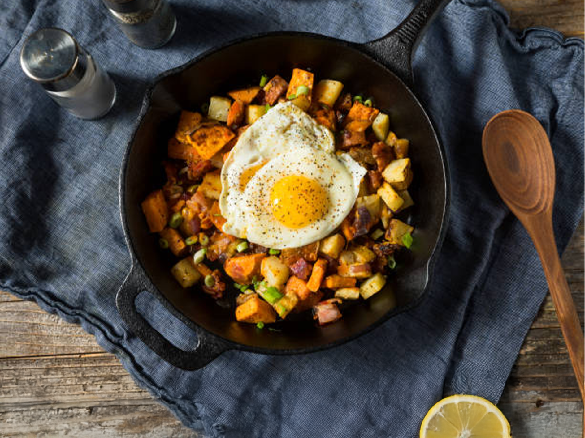

Pyttipanna special
- 3 matskedar neutral olja
- 450 g färsk korv (valfri smak), skinnet borttaget
- 900 g röda eller allround-potatisar, skurna i 2 cm kuber
- Kosher-salt
- 120 ml vatten
- 2 medelstora gula lökar, hackade
- 1 stor röd paprika, urkärnad, rensad och hackad
- 1 matsked hackad färsk salvia, eller 2 teskedar finhackad färsk timjan eller rosmarin
- 1½ tesked finhackad eller riven vitlök
- 120 ml grädde (eller hälften mjölk, hälften grädde)
- Nymalen svartpeppar
- 120 ml hackad färsk persilja
- 4 ägg
Hetta upp 1 matsked olja i en stor stekpanna på medelvärme tills det skimrar. Tillsätt korven och bryt ner den i små bitar medan den steks, ca 3–4 minuter, tills den inte längre är rosa. Flytta över korven till en skål och låt fettet vara kvar i pannan. Hetta upp resten av oljan i samma panna, tillsätt potatisen och rör runt för att täcka dem med oljan. Tillsätt ½ tesked salt och häll i vattnet. Täck med lock och låt sjuda tills potatisen är nästan mjuk, ca 12 minuter. Ta bort locket, tillsätt löken och paprikan, stek i ca 10 minuter tills de är gyllene. Tillsätt vitlök och örter, rör om och låt steka i 30 sekunder. Häll i grädden och krydda med salt och peppar. Rör ner den brynta korven. Gör små gropar i blandningen och knäck ett ägg i varje grop. Strö lite salt och peppar över äggen. Täck pannan och låt koka tills äggvitorna har stelnat men gulan fortfarande är rinnig, ca 8–10 minuter. Strö över hackad persilja och servera genast.
